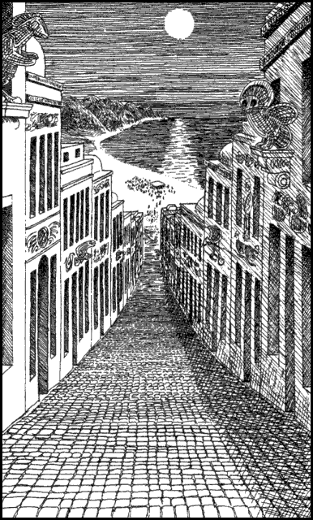

124
You are in good spirits when you reach the ancient gates of Gologo. Your day’s ride has been swift and enjoyable, and you are looking forward to beginning the final leg of your journey to Elzian tomorrow at first light. You are now only two days’ ride away from that wondrous city.
The town of Gologo has a mysterious and exotic aura. Its ancient streets are cobbled with lime green stone, and ornate structures of vivid Vakeros art embellish every building and street corner. There is a festival taking place here tonight and the town is in a lively carnival mood. As you ride down a steep, narrow street towards the beach, you can see a crowd of native Vakeros are gathered there in brightly coloured costumes. Some wear elaborate headgear made from lacquered wood and feathers, and others are covered from neck to ankle with garments made from vibrant jungle blooms. There is a full moon tonight and the people of this town are celebrating the fertility of their land with ritual offerings of food and wine to the Goddess Ishir. It is a joyous festival and everyone on the beach is smiling and happy.

If you wish to go to the beach and join in the festival, turn to 251.
If you choose instead to look for an inn or a lodging house where you can stay the night, turn to 321.